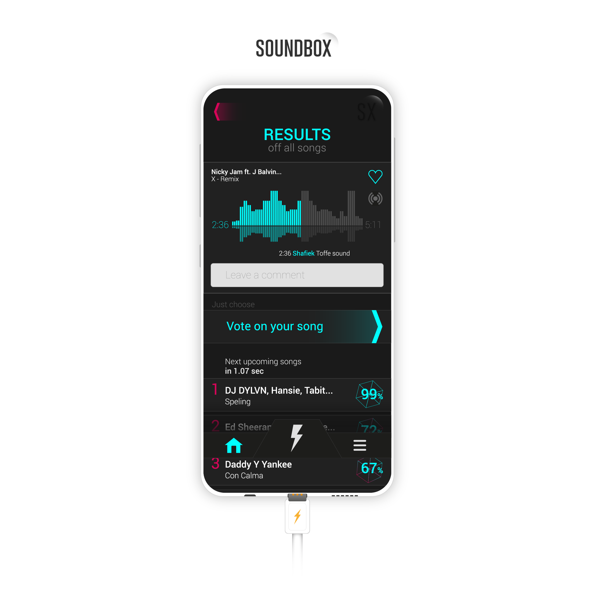
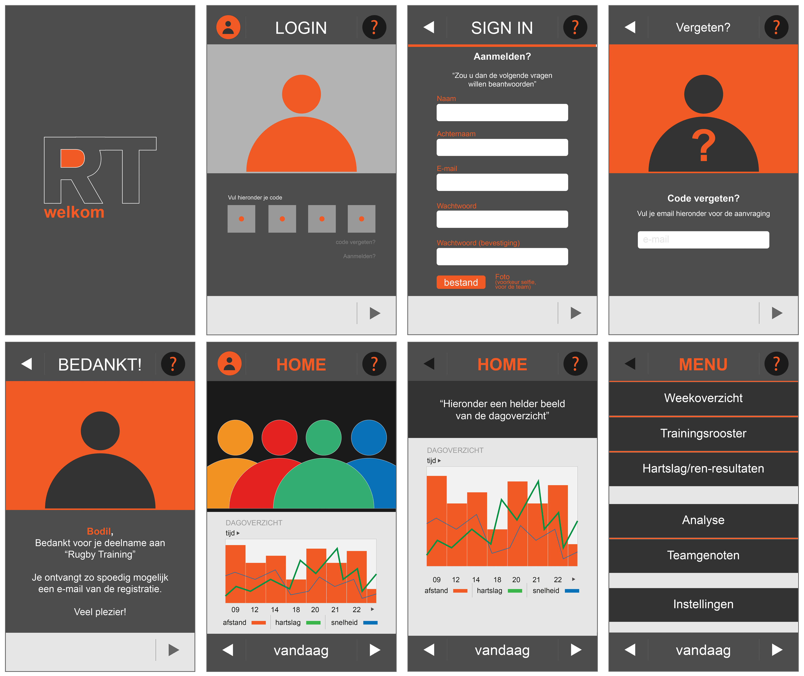
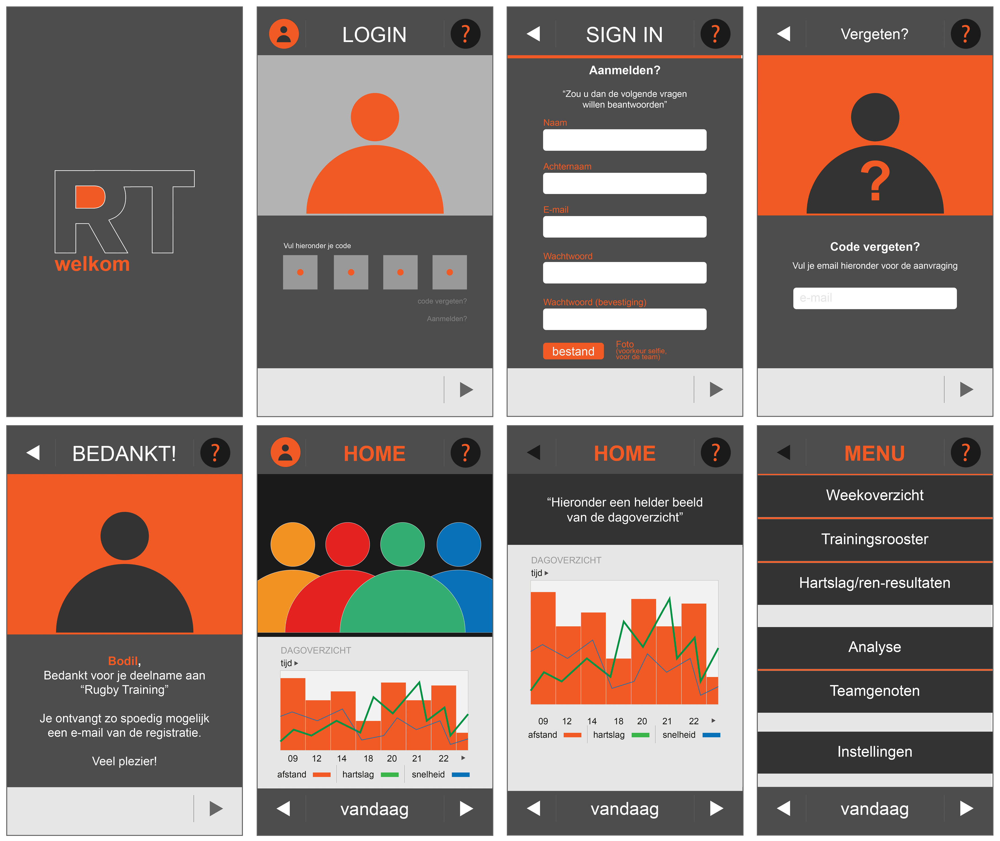

Projecten
Hieronder staan mijn projecten waar ik trots op ben en deze zal ik aan jouw voorleggen.
TARGETS


Een applicatie oprichten voor nieuwe internationale studenten die een studie willen volgen op het HVA. Voor nieuw komende studenten weten zij niet waar ze bepaalde behoeftes kunnen kopen. Door gebruik te maken van Target kan de doelgroep snel en gemakkelijk genavigeerd worden naar hun eigen "Target".
Eindcijfer 8.4
SoundcloudBOX 2K18


Een applicatie oprichten voor Soundcloud in combinatie met ADE. Door middel van een Jukebox in combinatie met de app het publiek(Techno-lovers) besturen.
Deze SoundBOX-app heeft als idee dat de doelgroep tijdens het wachten in de rijen op eigen techno-muziek mag stemmen zodat de doelgroep een ander ervaring beleefd.
Eindcijfer 8.0
Soundbox 2K19

De vorige prototype van Soundbox heb ik opnieuw gemaakt om de verbeteringen erin te verwerken. Tussen deze twee prototypes zitten grote verschillen in compositie, vorm, herkenbaarheid, kleur en samenvattend de sfeer.
My application does not have many functions per screen, I have deliberately chosen because there is a focus point on every screen that the user has to look at.
OBA app


Een applicatie oprichten voor OBA waarbij de doelgroep kinderen zijn tussen de 8 tot 12 jaar oud. Hierbij werd gekeken hoe de doelgroep zich door de applicatie heen wordt gestuurd.
Eindcijfer 8.8
Rugby app
 

Een applicatie oprichten voor Rugby topsporters waarbij werd gekeken naar elkaars inzet en vermogen.
Uit dit app-resultaat kwam er een overzicht welke topsporter harder moest trainen om net zo goed te zijn als alle andere.
Eindcijfer 8.0
Project web

Een responsive verhalen-website ontwikkelen voor NS. De responsive website bestaat uit een inlog, account aanmaken, overzichts en detailscherm.
Eindcijfer 8.0
User Centred Design

De gebruikerservaring verbeteren van het koffieapparaat tegenover AMFI-studenten. AMFI studenten werken dag en nacht door om deadlines te behalen. Als oplossing had ik dat de studenten zelf mogen bepalen hoeveel koffie-sterkte zij in de beker willen hebben zodat zij de deadlines kunnen behalen.
Eindcijfer 7.7
Sedes "no sleep"

Werknemers op kantoor komen vaak vermoeid op werk omdat het een fulltime 40 uur werk is in een week. Dit project bestond uit drie producten die de slaapritmes van de doelgroep kon verbeteren.
Het horloge, wekker en masker in combinatie met oortjes. Het masker zorgt voor geen licht, de oortjes geven een ontspannen slaap muziek. De wekker geeft aan de overige werknemers dat de huidige werknemer aan het slapen is en ook tot hoelang. Het horloge maakt de gebruiker wakker door de trillingen.
Eindcijfer 7.0
Kaap de groene hoop

Een huisstijl ontwerpen voor "NEMO". Met daarbij vele verschillende uitingen om een beter overzicht te hebben van het huisstijl tegenover de opdrachtgever.
Kaap de groene hoop
Een huisstijl ontwerpen voor "Kaap de Groen Hoop". Met daarbij vele verschillende uitingen om een beter overzicht te hebben van het huisstijl tegenover de opdrachtgever.
Kaap de groene hoop

Een redesign huisstijl ontwikkelen voor Bionut. Bionut is een biologisch bulk merk. De ontwikkeling van Bionut was een lange proces omdat er vele methodes bij komen kijken om uiteindelijke een goede logo te hebben.